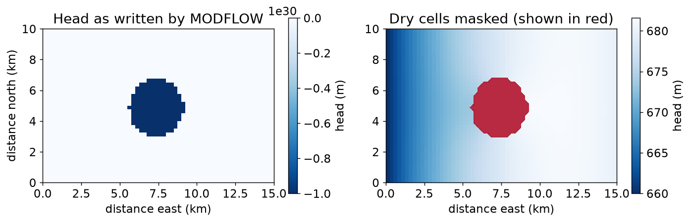

confined: success = True
unconfined: success = FalseHWRS 564a · Week 8 · Thursday, October 15
Week 8, session 2 of 2
laytyp: confined and unconfined layersWe’re working through week08_02_unconfined_dry_cells.ipynb, then week08_03_pinal_startup.ipynb.
LPFlaytyp=0, confined
\[T = Kb\]
\(b\) is the layer thickness. \(T\) does not depend on head.
laytyp=1, convertible
\[T = K(h - z_{bot})\]
Used when head is below the layer top. \(T\) depends on the head.
Use laytyp=1 when the top of the saturated zone is a water table. That is most of the Tucson basin.
With laytyp=1, MODFLOW needs \(T\) to solve for \(h\), and needs \(h\) to calculate \(T\).
Each pass through steps 2 and 3 is one outer iteration. This is the iteration idea from Week 4, applied to 2,400 cells at once.
Hint
Transmissivity is conductivity times saturated thickness. The saturated thickness is the head minus the layer bottom.
laytyp changedThis is Tuesday’s rectangular model at 250 m, with the layer top at 700 m and the east boundary at 680 m.
ok_conf, head_conf, ws_conf = run_box("confined", laytyp=0)
ok_uncf, head_uncf, ws_uncf = run_box("unconfined", laytyp=1)confined: success = True
unconfined: success = FalseThe .list file for the unconfined run says:
****FAILED TO MEET SOLVER CONVERGENCE CRITERIA IN TIME STEP 1 OF STRESS PERIOD 1****PCG stops when both of these are met:
| Argument | FloPy default | Meaning |
|---|---|---|
hclose |
1e-5 | largest head change between iterations, in metres |
rclose |
1e-5 | largest water-balance error in any one cell, in m³/d |
It also has limits on how long it will try:
| Argument | FloPy default | Meaning |
|---|---|---|
mxiter |
50 | maximum outer iterations |
iter1 |
30 | maximum inner iterations per outer iteration |
CONSTANT_HEAD_IN 123502.8672 m3/d
RECHARGE_IN 17400.0000 m3/d
CONSTANT_HEAD_OUT -120902.8672 m3/d
WELLS_OUT -20000.0000 m3/d
IN-OUT 0.0000 m3/dAbout 140,000 m³/d moves through the model, and the budget balances.
rclose=1e-5 asks every cell to balance to 0.00001 m³/d. The solver gets close and then stops improving, because the numbers are not that precise.
mxiter=200: success = FalseNo. The residual has stopped shrinking, so more iterations don’t help.
Express rclose as a fraction of the total flow through the model, for the default and for the value we chose.
Hint
Divide the tolerance by the total flow.
0.000061 mThe heads are the same. The first run had reached the answer and was reported as failed because the tolerance could not be met.
That is not always so. Tuesday’s first basin model also failed, and its heads were nonsense. You have to look.
.list filehclose and rclose with the heads and flows in the modelA run that converges has met its tolerances. Whether the boundary conditions, conductivity, and recharge are right is a separate question.
laytyp matter?Both layer types, with the well pumping 80,000 m³/d:
confined well-cell head 630.95 m
unconfined well-cell head 627.86 m
difference -3.09 mThe cell has no saturated thickness. MODFLOW marks it dry, sets its head to -1e30, and takes it out of the calculation.
To see it: layer bottom at 640 m, pumping 40,000 m³/d.

| Value | Meaning |
|---|---|
hnoflo (-999.99 by default) |
inactive cell, ibound = 0 |
hdry (-1e30 by default) |
the cell went dry during the run |
| anything else | a calculated head |
Mask the first two before you plot or calculate anything.
Hint
Compare against a threshold near the flag value, such as -1e29. Then use np.where to put np.nan in the dry cells.
pumping asked for: 40,000 m3/d
pumping in the budget: 0 m3/dAnd compare the pumping in the budget with the pumping you asked for.
Project 3 uses a MODFLOW model of the Pinal Active Management Area, built by the Arizona Department of Water Resources.
Today: get it onto your machine and look at it. We won’t run it yet.
Open labs/week09/week09_01_pinal_startup.ipynb.
pinal_model at the top of the course repoEverything in the notebook is something you did this week on the small model.
| This week | In the Pinal model |
|---|---|
| Cell size | How big are the cells? What does that mean near a well? |
ibound |
How much of the grid is active? Is it all connected? |
laytyp |
Which layers are confined and which are convertible? |
| Solver | Which solver, and what tolerances? |
Write your answers in the notebook and keep it. You’ll use them when Project 3 starts.
What you did today
laytyp.list file why a run did not converge, and fixed the toleranceibound of the Pinal County modelBefore Tuesday
week08_03_pinal_startup.ipynbNext week
Models that change through time: stress periods, storage, and wells that switch on and off.
HWRS 564a · Fall 2026